Problèmes et recos
23 problèmes, du plus gênant au plus petit. Chacun : le symptôme, sa preuve, sa cause dans le code, qui le voit et combien de fois, deux ou trois options, le choix et pourquoi, la règle ou la convention qui le fonde, la spécification prête à coder et des critères d’acceptation vérifiables. Les captures sont affichées à leur taille CSS réelle.
| n | problème | gravité | effort | axe | choix tranché |
|---|---|---|---|---|---|
| P1 | Les captures des Fonctionnalités sont réduites jusqu’à l’illisible | gêne | 3 h | fonction | |
| P2 | La ligne d’installation est coupée par « … » : on ne voit pas ce qu’on colle | gêne | 30 min | fonction | |
| P3 | Les vignettes des Versions vont de ×0,33 à ×1,89, et décalent la page | gêne | 4 h | sens · fonction | |
| P4 | L’accueil pèse 2,5 Mo, dont la moitié d’images plus grandes qu’affichées | gêne | 2 h | fonction | |
| P5 | Sur téléphone, les icônes du dock tombent à 22 px, sans nom | gêne | 45 min | fonction · familiarité | |
| P6 | La source des citations de Claude, le chevron des Guides et le gris secondaire sont trop pâles | gêne | 20 min | fonction | |
| P7 | Au clavier, chaque composant a un focus différent, ou celui du navigateur | gêne | 1 h | fonction · familiarité | |
| P8 | Dans les Guides, des liens ne se distinguent du texte que par la couleur | gêne | 15 min | fonction | |
| P9 | Aucune page n’a de contenu principal ; sur l’accueil, le pied est dans l’installation | gêne | 20 min | fonction | |
| P10 | La carte « Les appels de votre iPhone » a perdu son objet, et décale la série | gêne | 30 min (repli) · 1 jour (dessin) | sens | ⚠ |
| P11 | 360 apostrophes droites, et des deux-points qui peuvent commencer une ligne | détail | 1 h (script) | familiarité | |
| P12 | Les chemins de menu se coupent n’importe où et se dessinent de deux façons | détail | 45 min | sens · familiarité | |
| P13 | Données et confidentialité : douze paragraphes de même poids | détail | 1 h | sens · fonction | ⚠ |
| P14 | Filets entre les lignes des Guides et des Versions | détail | 30 min | sens | |
| P15 | La source d’une citation part en bout de ligne derrière un « · » | détail | 10 min | sens | |
| P16 | Le titre des Fonctionnalités flotte entre le sommaire et le texte | détail | 10 min | sens | |
| P17 | Quatre largeurs sur l’accueil : les bords descendent en escalier | détail | 30 min | sens | |
| P18 | 21 tailles de police déclarées, 42 styles de texte rendus | détail | 3 h | sens | |
| P19 | 54 couleurs écrites en dur, 18 opacités de la même encre, 49 règles mortes | détail | 4 h | sens (maintenance) | |
| P20 | Les liens du pied font 23 px de haut, à 16 px du voisin | détail | 10 min | fonction | |
| P21 | Le trait d’union du titre se lit comme un tiret | détail | 10 min | sens | ⚠ |
| P22 | Aperçus de partage : la page Versions annonce la 0.16, et aucun n’a de texte alternatif | détail | 1 h | sens · fonction | |
| P23 | Le site ne suit pas le mode sombre du Mac | détail | 1 jour | familiarité | ⚠ |
« Gêne » : un visiteur ne peut pas faire ou lire quelque chose, ou une règle d’accessibilité échoue. « Détail » : se voit, ne bloque rien. ⚠ : la reco touche une décision de Gildas ou un texte ; elle attend son avis.
P1 · Les captures des Fonctionnalités sont réduites jusqu’à l’illisible
Symptôme
Sur la page Fonctionnalités, quatre fenêtres entières de l’app (2 360 à 2 560 px) sont affichées dans la colonne de 812 px. Le texte de l’app, en 13 pt sur le Mac, tombe à 8 px à 1440 et à 3,5 px à 375. Le paragraphe au-dessus dit « chaque voix reçoit un numéro et une couleur » ; la capture ne permet pas de le lire.
Preuve
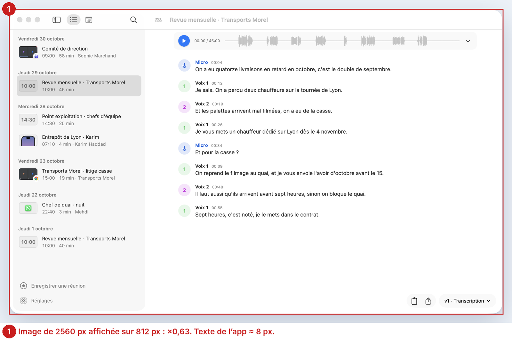
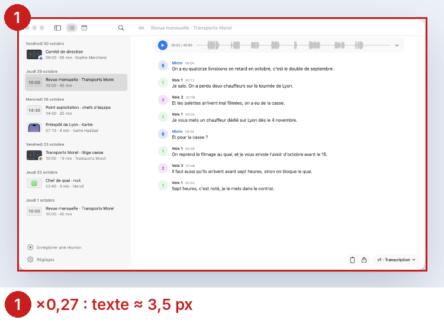
Échelle mesurée (largeur affichée × 2 ÷ largeur du fichier) : appels-reunion, appels-note, calendrier 0,63 à 1440 et 0,27 à 375 ; transcription 0,69 et 0,29. Toutes les échelles : Mesures.
Cause dans le code
fonctionnalites/index.html:86, 106, 118, 129 pointent sur les captures de fenêtre entière de l’accueil ; style.css:479 (.feature figure img { width: 100% }) les étire à la colonne quelle que soit leur taille.
Impact
Tout visiteur de la page Fonctionnalités (la seule page liée depuis la barre du haut), à chaque section illustrée : 4 figures sur 10. Sur téléphone, les quatre sont des rectangles gris.
Options
Choix
A répond au besoin (voir ce que le texte affirme) sans geste ; c’est la forme que DESIGN.md prévoit déjà pour une image « coupée en plein contenu », qui reste un rectangle avec son liseré. Les captures entières restent sur l’accueil, où la scène les montre à ×0,82.
Règles et conventions
- Apple HIG, Typography, Specifications : sur macOS, le texte d’interface ne descend pas sous 10 pt ; 13 pt est la taille par défaut.
- DESIGN.md, Captures : « La netteté : un petit objet s’affiche à sa taille, en résolution double, jamais agrandi. »
- linear.app (1440 px) : Toutes les images à la même largeur affichée (624 px, une seule colonne), natives de 2400 à 3904 px (×4 à ×6) ; ratios proches de 16:9 à 3:2 ; mises en scène recadrées sur la nouveauté (objet sur fond sombre), pas de fenêtres entières. capture
- raycast.com (1440 px) : Largeur fixe 760 px ; chaque version ouvre sur une bannière 1720×630 identique de format, puis des captures recadrées sur la nouveauté (ex. menu de la barre des menus avec un bout de bureau, 1250×998), pas des fenêtres entières. capture
- notion.com (1440 px) : Largeur fixe 667 px pour images et vidéos ; ratios alternant 16:9 et 4:3 ; natives de 960 à 3840 px ; illustrations et vues recadrées sur la fonction plutôt que l'app entière. capture


Spécification
| lieu | avant | après |
|---|---|---|
| fonctionnalites/index.html:86 | <img class="decoupe" src="../img/appels-reunion.webp?v=2" width="2560" height="1582"> | <img class="extrait-coupe" src="../img/appels-reunion-extrait.webp" width="1180" height="1040" style="--l:590px"> |
| fonctionnalites/index.html:106 | appels-note.webp 2560 × 1582 | appels-note-extrait.webp 1300 × 990, --l:650px |
| fonctionnalites/index.html:118 | transcription.webp 2360 × 1582 | transcription-extrait.webp 1330 × 1180, --l:665px |
| fonctionnalites/index.html:129 | calendrier.webp 2560 × 1582 | calendrier-extrait.webp 720 × 940, --l:360px |
| style.css, après :479 | — | .feature figure img[style*="--l"] { width: var(--l); max-width: 100%; } |
| img/ | — | Les quatre extraits, WebP sans perte (boîtes de recadrage dans donnees/extraits.csv) : 10 à 38 Ko chacun. |
Critères d’acceptation
- À 1440 px, aucune image de
.feature figuren’a une échelle sous 0,8 ni au-dessus de 1,05 (mesuré parscripts/extrait.js: 0,63 → 0,81 à 1,0). - À 375 px, aucune sous 0,4 (0,27 → 0,43).
- Les extraits sont des rectangles avec liseré ; aucune ombre
drop-shadowsur un rectangle (scripts/controle-captures.pydu site passe).
P2 · La ligne d’installation est coupée par « … » : on ne voit pas ce qu’on colle
Symptôme
Sur l’accueil, la commande à coller dans le Terminal finit toujours par « install.sh… ». La fin, « | zsh », n’est jamais visible, à aucune largeur. À 375 px, on lit « curl -fsSL https://github.com/gildasfr… ». Au survol, « Copier » couvre 48 px de plus.
Preuve
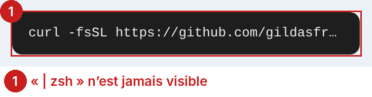
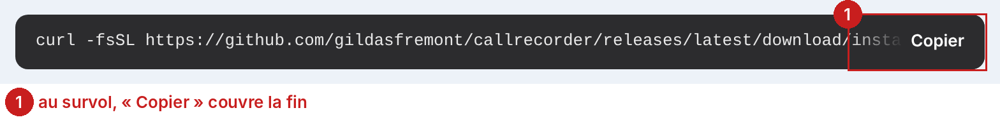
La ligne fait 99 caractères, en 13 px mono : 772 px. La place disponible : 728 px à 1440, 311 px à 375.
Cause dans le code
style.css:262 : .cmdline code { white-space: nowrap; overflow: hidden; text-overflow: ellipsis; }, depuis la page de téléchargement (55a2120, 24 octobre). style.css:264–269 : « Copier » posé sur un fondu qui recouvre la fin.
Impact
Chaque personne qui installe : c’est la seule action de la page. Elle colle dans le Terminal, avec ses droits, une ligne dont elle n’a pas vu la fin.
Options
Choix
Aucun site observé n’utilise d’ellipse ; tous montrent la commande entière à 1440 et gardent « Copier » visible. Au téléphone, deux sur trois font défiler, brew.sh revient à la ligne. A suit brew.sh : la commande est courte (99 signes), trois à six lignes se lisent d’un coup, et rien ne reste caché.
Règles et conventions
- Apple HIG, Buttons : un bouton se lit en permanence ; une action révélée au survol n’existe pas au toucher.
- WCAG 1.4.10 Reflow : à 320 px de large, le contenu se lit sans défilement à deux dimensions.
- brew.sh (375 px) : La commande est montrée en entier : elle passe à la ligne (white-space: pre-wrap, l'URL est coupée en plein mot) sur 3 lignes, sans défilement ni ellipse ; bouton copier toujours visible à droite. capture
- brew.sh (1440 px) : Commande entière sur une ligne, bouton copier (icône ⧉, aria-label « Copy to clipboard ») toujours visible. capture
- rustup.rs (375 px) : La commande reste sur une ligne (nowrap) et défile horizontalement dans son cadre : 217 px visibles sur 607, coupée net sans ellipse ; bouton copier toujours visible. capture
- rustup.rs (1440 px) : Commande entière sur une ligne (607 px), bouton copier toujours visible. capture
- tailscale.com (375 px) : Une ligne (white-space: pre) qui défile horizontalement : 263 px visibles sur 397, coupée sans ellipse ; police réduite à 14 px ; bouton copier (icône 17 px) toujours visible. capture
- tailscale.com (1440 px) : Commande entière sur une ligne à 16 px, bouton copier toujours visible. capture


Ce qui a été tranché
L’ellipse vient de la page de téléchargement (55a2120) ; aucun commit ne la justifie.
Spécification
| lieu | avant | après |
|---|---|---|
| style.css:256 | padding: 12px 16px | padding: 12px 84px 12px 16px |
| style.css:262 | white-space: nowrap; overflow: hidden; text-overflow: ellipsis | white-space: normal; overflow-wrap: anywhere; line-height: 1.5 |
| style.css:264–269 | .hint : fondu, opacity 0, visible au survol | .hint { opacity: 1; top: 12px; bottom: auto; background: none; color: #9aa0a6; } ; au survol et au focus : #fff |
| index.html:192 | …/download/install.sh | zsh | …/<wbr>download/<wbr>install.sh | zsh (un <wbr> après chaque « / » du chemin) |
Critères d’acceptation
- À 375, 768 et 1440 px,
#cmdascrollWidth ≤ clientWidth(rien de caché) et le texte « zsh » est dans la boîte visible. - « Copier » est visible sans survol (opacité 1).
- Un clic copie toujours la ligne exacte (le presse-papiers ne contient ni
<wbr>ni insécable :textContentles ignore ; vérifier par un collage).
P3 · Les vignettes des Versions vont de ×0,33 à ×1,89, et décalent la page
Symptôme
Sur la page Versions, la liste Android de la 0.24.0 est agrandie près de deux fois : floue, et son texte plus gros que celui de la page. Juste en dessous, la 0.20.0 est illisible. Les fenêtres entières des 0.6.0, 0.7.0, 0.7.1 et 0.11.0 sont à un tiers. La 0.19.0 est en sombre au milieu de captures claires. Pendant le chargement, la page saute (CLS 0,109).
Preuve
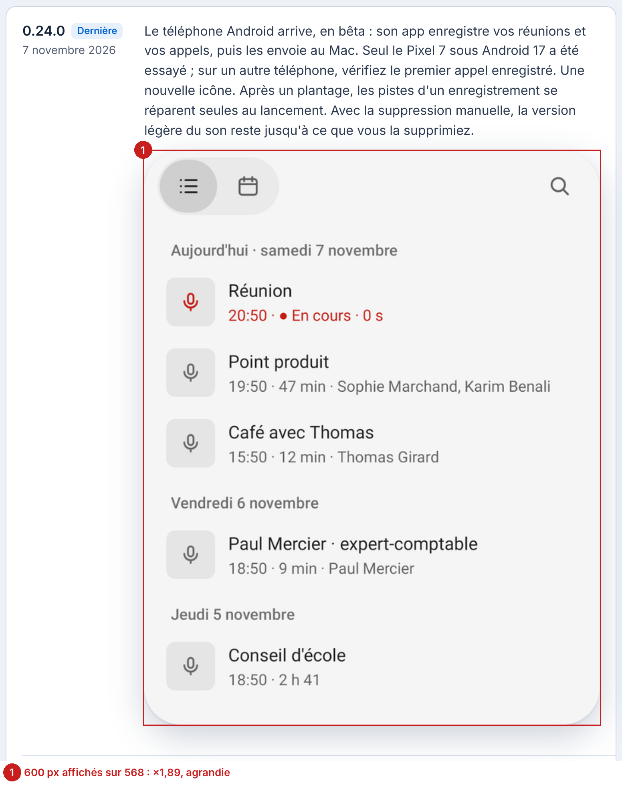
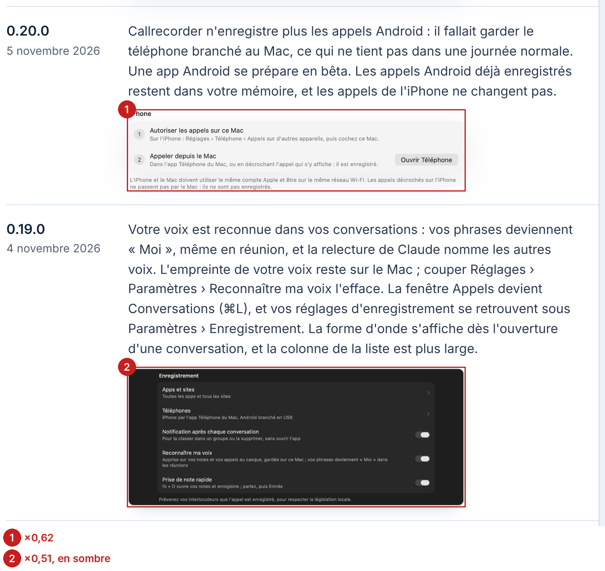
22 vignettes visibles : échelles de 0,33 à 1,89 à 1440 (médiane 0,61), de 0,24 à 1,01 à 375. 21 images de la page sans width ni height (Lighthouse unsized-images) ; CLS 0,109 sur le profil ordinateur, au-delà du seuil de 0,1.
Cause dans le code
style.css:488 : .versions-page .version a.thumb { width: 420px } et :419 img { width: 100% } : chaque vignette prend 420 px (puis la colonne, 568 px), quelle que soit sa taille. Les images sont des fenêtres entières ou des extraits de largeurs très différentes (288 à 2 560 px).
Impact
Chaque visiteur de la page Versions : 22 vignettes sur 35 versions. La taille change sans raison d’une version à l’autre ; on croit lire une hiérarchie qui n’existe pas.
Options
Choix
Les journaux observés (Linear, Raycast, Notion) gardent une seule largeur d’affichage et montrent des images recadrées ou mises en scène, jamais des fenêtres entières. A fait de même : les extraits (1 140 à 1 400 px) s’affichent tous à la largeur de la colonne (568 px, ×0,81 à ×1) ; seuls les petits objets (la pastille de la 0.22.0, la liste Android de la 0.24.0) restent à leur taille, comme le veut la règle de netteté de DESIGN.md. Les extraits sont de nouveaux fichiers ; les anciennes vignettes ne sont pas écrasées. La 0.19.0 est à reprendre en clair à la prochaine occasion (l’app sait produire la capture), le recadrage seul ne suffit pas.
Règles et conventions
- DESIGN.md, Site : « La vignette d’une version montre sa nouveauté, et n’est jamais écrasée. » et Captures, « La netteté ».
- Core Web Vitals, CLS : bon sous 0,1 ; HTML, attributs de dimension :
widthetheightréservent la place avant le chargement. - linear.app (1440 px) : Toutes les images à la même largeur affichée (624 px, une seule colonne), natives de 2400 à 3904 px (×4 à ×6) ; ratios proches de 16:9 à 3:2 ; mises en scène recadrées sur la nouveauté (objet sur fond sombre), pas de fenêtres entières. capture
- raycast.com (1440 px) : Largeur fixe 760 px ; chaque version ouvre sur une bannière 1720×630 identique de format, puis des captures recadrées sur la nouveauté (ex. menu de la barre des menus avec un bout de bureau, 1250×998), pas des fenêtres entières. capture
- notion.com (1440 px) : Largeur fixe 667 px pour images et vidéos ; ratios alternant 16:9 et 4:3 ; natives de 960 à 3840 px ; illustrations et vues recadrées sur la fonction plutôt que l'app entière. capture
Spécification
| lieu | avant | après |
|---|---|---|
| versions/index.html, chaque <img> | sans width ni height (21 images) | width et height du fichier, et style="--l:<largeur ÷ 2>px" |
| versions/index.html, 0.4.0, 0.5.0, 0.5.5, 0.6.0, 0.7.0, 0.7.1, 0.11.0, 0.13.0, 0.15.0, 0.19.0 | fenêtres de 1 610 à 2 560 px | extraits <version>-extrait.webp de 1 140 à 1 400 px (boîtes dans donnees/extraits.csv) |
| style.css:488 | .versions-page .version a.thumb { width: 420px; } | .versions-page .version a.thumb { width: auto; max-width: 100%; } |
| style.css, après :488 | — | .versions-page .version a.thumb img[style*="--l"] { width: var(--l); max-width: 100%; height: auto; } |
Critères d’acceptation
- À 1440 px, toutes les vignettes entre ×0,8 et ×1,05 (0,33–1,89 → 0,81–1,0, mesuré).
- Lighthouse ordinateur, Versions : CLS ≤ 0,1 et aucune image dans
unsized-images. - Aucun fichier de
img/versions/modifié (les extraits sont nouveaux).
P4 · L’accueil pèse 2,5 Mo, dont la moitié d’images plus grandes qu’affichées
Symptôme
Sur téléphone, l’accueil met 5,1 s à afficher sa plus grande image (profil mobile de Lighthouse). L’icône du micro, montrée à 19 px dans la fenêtre de Claude, pèse 76 Ko ; l’ordinateur dessiné, 295 Ko pour 361 px affichés.
Preuve
Lighthouse, accueil : 2 465 Ko transférés ; performance 78 sur mobile (LCP 5 083 ms), 91 sur ordinateur. uses-responsive-images : 1 744 Kio d’économie possible. Recalculé image par image (Mesures) : 2 491 Ko → 1 245 Ko si chaque image est servie à deux fois sa plus grande taille affichée.
Cause dans le code
Les illustrations sont exportées à 1 000–1 200 px pour un affichage de 300 à 380 px ; les icônes d’apps en PNG 256 px pour 45 à 56 px ; icone-micro.webp à 256 px pour 19 px. Aucun srcset.
Impact
Chaque visiteur de l’accueil, et surtout au téléphone en 4G : la page est la porte d’entrée, et la scène apparaît après 5 s.
Options
Choix
A prend l’essentiel du gain (−1,2 Mo) pour un coût d’une heure ; B se justifiera si une image doit vraiment changer de taille selon l’écran.
Règles et conventions
- Core Web Vitals, LCP : bon sous 2,5 s.
- Lighthouse, Properly size images.
- DESIGN.md, Site, Images : « captures en WebP sans perte, illustrations en WebP (q 92) ».
Spécification
| lieu | avant | après |
|---|---|---|
| img/benefices/ordinateur.webp | 1200 px, 295 Ko | 722 px, 119 Ko |
| img/benefices/jack.webp | 1200 px, 108 Ko | 636 px, 37 Ko |
| img/benefices/cassettes.webp | 1000 px, 248 Ko | 756 px, 193 Ko |
| img/benefices/telephone.webp | 1099 px, 91 Ko | 584 px, 40 Ko |
| img/pixel-7*.webp (3) | 600 px, 331 Ko | 482 px, 120 Ko |
| img/icone-micro.webp | 256 px, 76 Ko | 38 px, 1 Ko (ou icone-micro-64.png, déjà là) |
| img/pile, dock, logos (21 icônes) | PNG 256 px, 860 Ko | WebP sans perte 90–112 px, ≈ 120 Ko |
| toute la liste | — | donnees/poids-images-accueil.csv : largeur utile et poids attendu de chacune |
Critères d’acceptation
- Lighthouse mobile, accueil :
total-byte-weight≤ 1 400 Ko ;uses-responsive-imagessans élément à plus de 20 Kio d’économie. - LCP mobile ≤ 3,5 s (5,1 s aujourd’hui).
- Aucune image affichée au-delà de sa moitié de pixels (échelle ≤ 1).
P5 · Sur téléphone, les icônes du dock tombent à 22 px, sans nom
Symptôme
À 375 px, les deux docks montrent 14 puis 7 icônes de 22 px (17,6 px de dessin dans la tuile), sur une ligne. Webex, Loom, Jitsi, Doctolib ne se reconnaissent pas. Le nom n’apparaît qu’au survol de la souris : jamais au doigt, jamais au clavier.
Preuve
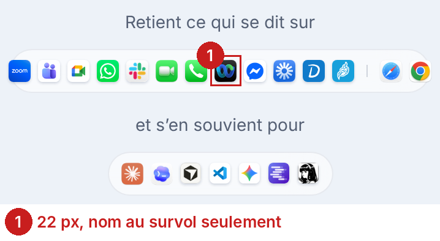
.dock .app : 22 × 22 px à 375, 43 × 43 à 768, 56 × 56 à 1440. Aucune n’est focalisable (ni lien, ni bouton, ni tabindex) : 0 des 21 noms n’est accessible sans souris, sauf par le alt de l’image.
Cause dans le code
style.css:222 : width: clamp(22px, 5.6vw, 56px) sur une seule ligne (:216, pas de flex-wrap). :231–237 : le nom en ::after, affiché seulement sur :hover.
Impact
Chaque visiteur au téléphone, à la question « mon app est-elle prise en charge ? », qui est la raison d’être du dock (bd505a4, « Dock des apps prises en charge »).
Options
Choix
La convention observée est D (aucun site ne garde une grille à 375 px). A est retenu quand même : le Dock est un choix (bd505a4), il tient en 96 px au lieu de 1 000, et 40 px suffisent à reconnaître les logos ; le nom au toucher et au clavier comble l’écart. Si Gildas préfère la convention, D est prêt à dessiner.
Règles et conventions
- Apple HIG, Accessibility : 44 × 44 pt au toucher.
- WCAG 1.4.13 et 2.1.1 Keyboard : ce qui apparaît au survol doit apparaître au focus.
- raycast.com (375 px) : Pas de grille : une extension par rangée, icône 32 px suivie du nom (et d'un bouton Install), dans une carte avec description. capture
- linear.app (375 px) : Pas de grille : une intégration par carte, icône 40 px à gauche du nom et de l'éditeur (« By Linear »), description dessous ; 72 icônes de même taille. capture
- notion.com (375 px) : Une intégration par rangée, icône 48 px dans une tuile grise 88 px ; le nom est dans le DOM mais écrasé à 0 px de large par la mise en page, donc invisible à 375 (61 px à 1440). capture
- apple.com (375 px) : Pas de grille : carrousel horizontal de cartes de 280 px (une carte et le bord de la suivante visibles), icône 56 px suivie du nom de l'app. capture


Ce qui a été tranché
Le Dock est un choix (bd505a4) : il reste ; seule sa mise en page sous 640 px change.
Spécification
| lieu | avant | après |
|---|---|---|
| style.css, @media (max-width: 640px), nouveau | — | .dock { flex-wrap: wrap; gap: 4px; padding: 8px; border-radius: 20px; max-width: 344px; } .dock .app { width: 40px; height: 40px; } .dock .sep { display: none; } |
| style.css:230, 237 | .dock .app:hover img / :hover::after | ajouter :focus-visible aux deux sélecteurs |
| index.html:137–151, 155–161 | <span class="app tile" …> | <span class="app tile" tabindex="0" …> (21 icônes) |
Critères d’acceptation
- À 375 px, chaque
.dock .appmesure ≥ 40 × 40 px. - Au clavier (Tab), chaque icône prend le focus et affiche son nom.
- À 1440 px, le dock est inchangé au pixel près.
P6 · La source des citations de Claude, le chevron des Guides et le gris secondaire sont trop pâles
Symptôme
La source de chaque citation dans la fenêtre de Claude (« Banque Aurore, 28 oct. ») est à 3,7:1. Le chevron qui dit qu’une question se déplie est à 2,65:1. Le gris secondaire, partout, passe WCAG (5,55:1) mais reste sous le seuil APCA du texte courant (Lc 73 pour 75).
Preuve
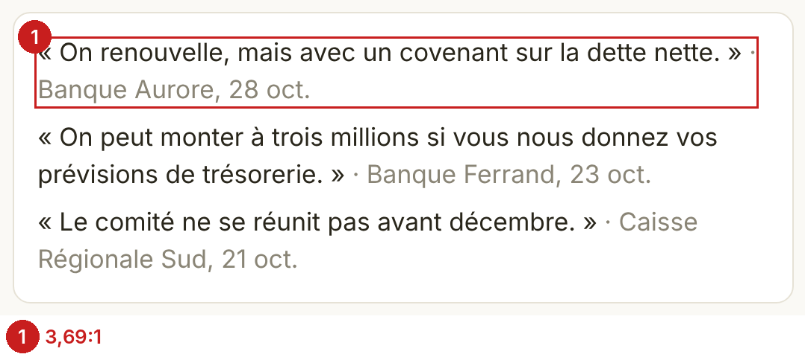
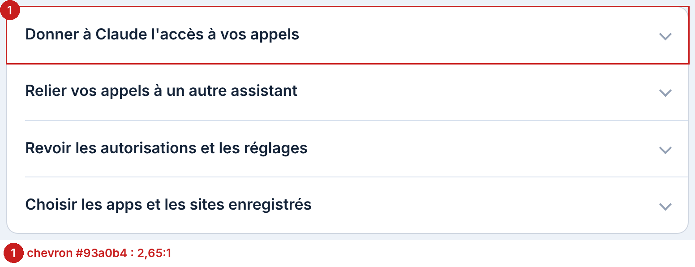
18 textes sous WCAG 2 AA, tous #8a8576 (3,69:1 sur blanc, 3,5:1 sur #faf9f5, axe color-contrast). Chevron #93a0b4 : 2,65:1 (WCAG 1.4.11 demande 3:1). 199 textes sous APCA : 102 liens #0064d2 (Lc 69), 67 en #566175 (Lc 73), les 18 sources et 12 libellés de la fenêtre de Claude. Tous les couples : Mesures.
Cause dans le code
style.css:156 .claude .sub { color: #8a8576 } (f079709) ; :401 chevron #93a0b4 ; :6 --secondary: #566175.
Impact
La source est ce qui fait la valeur de la réponse : le site la promet (« avec l’appel et l’heure de chaque citation »). Tout visiteur de l’accueil la voit, trois fois. Le chevron : 19 questions dans les Guides.
Options
Choix
A corrige les trois échecs et le gris de confort, sans toucher à la marque. B n’est pas retenu : il change une valeur tranchée pour un gain qui ne se voit pas.
Règles et conventions
- WCAG 2.1, 1.4.3 Contrast (Minimum) : 4,5:1.
- 1.4.11 Non-text Contrast : 3:1 pour une icône qui porte une action.
- APCA : Lc 75 pour le texte courant.
- Apple HIG, Color : contraste suffisant, et plus avec « Augmenter le contraste ».
Spécification
| lieu | avant | après |
|---|---|---|
| style.css:156 | .claude .sub { color: #8a8576; } | .claude .sub { color: #736e5c; } |
| style.css:401 | border-right/bottom: 2px solid #93a0b4 | 2px solid #6f7c92 |
| style.css:6 | --secondary: #566175; | --secondary: #515c70; |
| DESIGN.md (app), tableau du site | --secondary #566175 | --secondary #515c70 |
Critères d’acceptation
- axe-core, 5 pages × 2 largeurs : 0 nœud
color-contrast(18 → 0). - Aucun texte sous 4,5:1 (minimum 3,69 → 4,86, mesuré).
- Chevron ≥ 3:1 sur blanc.
- Textes en
--secondary: Lc ≥ 75 sur--window.
P7 · Au clavier, chaque composant a un focus différent, ou celui du navigateur
Symptôme
Au clavier, le contrôle segmenté, le lien de la barre et le bouton principal prennent l’anneau noir du navigateur, collé au bord ; la ligne de commande prend un anneau bleu décalé ; Dicter, une bordure bleue épaissie ; le texte du message, un contour bleu à 1 px. Le contrôle segmenté ne réagit pas sous la souris : les segments non choisis ressemblent à du texte.
Preuve
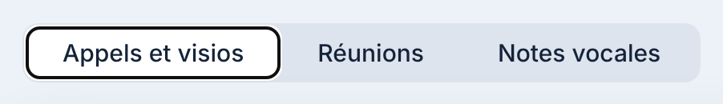
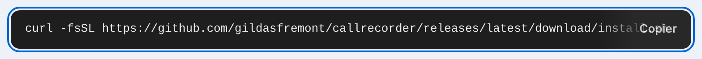
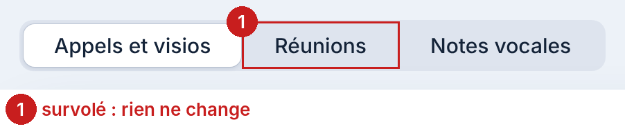
Inventaire : 13 composants sur 25 sans focus dessiné (Inventaire). Quatre dessins de focus différents dans style.css (:261, :363, :374, et celui du navigateur). .tabs button : aucune règle :hover.
Cause dans le code
Pas de règle :focus-visible générale ; chaque composant récent a reçu la sienne. style.css:121 sans :hover.
Impact
Toute personne qui navigue au clavier : 131 cibles à 1440 px. Le survol manquant touche chaque visiteur à la souris devant les onglets de l’accueil.
Options
Choix
A est la convention observée et répond à WCAG 2.4.7 (2.4.13 au niveau AAA). Pour le survol, les sites observés ne changent pas le fond d’un onglet non choisi, seulement la couleur de son texte (Apple : #6E6E73 → #424245 ; Raycast : gris → blanc) ; le fond reste le signe du choix. Le prototype fait de même.
Règles et conventions
- Apple HIG, Focus and selection : l’anneau de focus de macOS, à la couleur d’accent.
- WCAG 2.4.7 Focus Visible ; 2.4.13 Focus Appearance (AAA) : 2 px, 3:1.
- Apple HIG, Segmented controls.
- apple.com (1440 px) : Contour plein bleu 2 px (#0071E3) sur tous les éléments tabulés ; le décalage varie : 0 à 3 px sur les boutons, −7 px (à l'intérieur) dans la barre de navigation. capture
- raycast.com (1440 px) : Anneau natif du navigateur (outline-style: auto) teinté gris très clair #EEE, 1 px, décalé de 1 px, qui suit l'arrondi 6 px des liens. capture
- linear.app (1440 px) : Contour plein 1 px à la couleur de marque (violet #5E69D1), décalé de 2 px, sur des liens en pilule. capture
- culturedcode.com/things (1440 px) : Anneau natif du navigateur (outline-style: auto) presque noir #101010, 1 px, décalé de 1 px. capture
- notion.com (1440 px) : Contour plein bleu 2 px (#0075DE), décalé de 2 px, identique sur tous les liens et boutons de l'en-tête. capture
- apple.com (1440 px) : Onglets texte (role=tab) : au survol, l'onglet non choisi ne change que la couleur du texte, de #6E6E73 à #424245 ; pas de fond. L'onglet choisi est en #1D1D1F. capture
- raycast.com (1440 px) : Contrôle segmenté Pro/Plus/Max : au survol, le segment non choisi passe du gris #9C9C9D au blanc, sans fond ; seul le segment choisi a un fond (blanc 9 %) et un liseré intérieur. capture
- notion.com (1440 px) : Contrôle segmenté Facturation mensuelle/annuelle : aucun changement au survol du segment non choisi (capture identique au pixel près) ; le segment choisi est une pastille blanche sur rail gris. capture


Spécification
| lieu | avant | après |
|---|---|---|
| style.css, en tête | — | :focus-visible { outline: 2px solid var(--accent); outline-offset: 2px; } |
| style.css:261, 363, 374 | trois anneaux particuliers | remplacés par la règle commune |
| style.css:121 | .tabs button { color: var(--text); } | .tabs button { color: var(--secondary); transition: color .12s ease-out; } .tabs button[aria-selected="true"], .tabs button:hover { color: var(--text); } |
Critères d’acceptation
- Chaque élément focalisable des cinq pages montre le même anneau (vérifié sur la planche États).
- L’anneau a un contraste ≥ 3:1 avec le fond adjacent (accent sur
#edf2f8: 4,97:1). - Un segment non choisi est en gris secondaire et passe à la couleur du texte au survol ; son fond ne change pas.
P8 · Dans les Guides, des liens ne se distinguent du texte que par la couleur
Symptôme
Dans une réponse des Guides, un lien bleu dans une phrase grise n’est ni souligné ni en gras. Entre l’accent et le texte autour : 2,05:1, et 1,11:1 quand le texte est gris.
Preuve
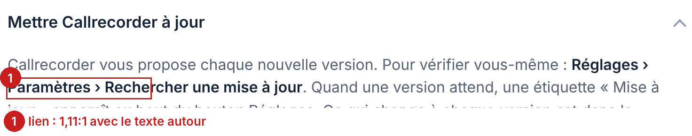
axe-core link-in-text-block : 2 liens, aux deux largeurs. Contraste accent / texte : #0064d2 contre #2c3a50 2,05:1 ; contre #566175 1,11:1 (3:1 demandé).
Cause dans le code
style.css:26 : a { text-decoration: none } partout, soulignement seulement au survol (:27).
Impact
Les personnes qui distinguent mal les couleurs, et tout le monde sur un écran au soleil : le lien ne se voit pas. 2 liens dans les Guides, d’autres à venir dans les réponses et les versions.
Options
Choix
A est ce que le critère attend et ce que les sites de référence font dans un texte courant.
Règles et conventions
- WCAG 1.4.1 Use of Color et la technique G183 : 3:1 avec le texte autour, ou un autre signe.
Spécification
| lieu | avant | après |
|---|---|---|
| style.css, après :27 | — | details.row .answer a, .legal a, .version p a, .feature .col > p:not(.meta) a { text-decoration: underline; text-decoration-thickness: 1px; text-underline-offset: .18em; text-decoration-color: color-mix(in srgb, var(--accent) 45%, transparent); } |
Critères d’acceptation
- axe-core : 0 nœud
link-in-text-block. - Les liens de la barre, du pied et des lignes
.metarestent sans soulignement au repos.
P9 · Aucune page n’a de contenu principal ; sur l’accueil, le pied est dans l’installation
Symptôme
Un lecteur d’écran ne trouve pas de « contenu principal » : aucune page n’a de <main>. Sur l’accueil, la section Installation n’est jamais fermée : le pied et le message à Gildas en font partie.
Preuve
axe-core : landmark-one-main sur 5 pages × 2 largeurs, region sur 22 à 24 nœuds par page (accueil, Guides). Accueil : 3 <section> ouvertes, 2 fermées.
Cause dans le code
Les cinq index.html : <nav> puis le contenu directement dans .wrap. index.html:184 ouvre section#installation, fermée par la fin de .wrap, après le pied (:216).
Impact
Les personnes au lecteur d’écran (VoiceOver : le rotor « Repères » ne propose pas d’aller au contenu) ; chaque page, à chaque visite.
Options
Choix
Correction de structure sans effet visuel ; vérifiée sur les prototypes (0 violation axe).
Règles et conventions
Spécification
| lieu | avant | après |
|---|---|---|
| index.html:38, fonctionnalites:38, guides:38, versions:38, confidentialite:38 | </nav> | </nav>
<main> |
| index.html:216 et les quatre autres <footer> | <footer> | </main>
<footer> (accueil : </section>
</main>
<footer>) |
Critères d’acceptation
- axe-core : 0 nœud
landmark-one-mainetregionsur les cinq pages. - Le rendu à 375, 768 et 1440 px est identique au pixel près (structure seule).
P10 · La carte « Les appels de votre iPhone » a perdu son objet, et décale la série
Symptôme
Sur l’accueil, cinq cartes de bénéfice ont un objet à l’encre qui entre par un bord, en alternance gauche / droite. Celle-ci n’a qu’un titre et une ligne. Juste après vient un téléphone dessiné, ouvert sur Claude : on le lit comme l’image de la carte iPhone, décalée d’un cran. Son texte redit celui des cassettes (« les appels de votre iPhone pris sur le Mac »).
Preuve
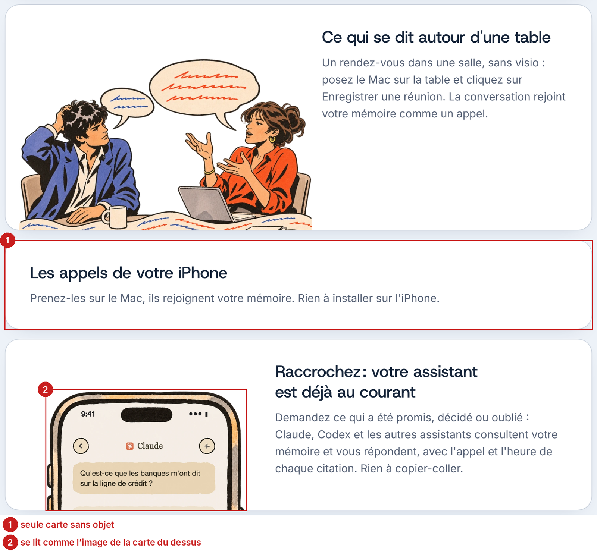
6 cartes, 5 objets. Alternance actuelle du texte : droite, gauche, droite, (aucun objet), droite, gauche : deux cartes de suite à droite.
Cause dans le code
d08fba2 (5 novembre, « Android retiré de la version publiée ») a retiré les images iPhone et Android de la carte (index.html:176), sans lui en donner une autre. style.css:549–551 la traite à part.
Impact
Chaque visiteur de l’accueil : la carte est au milieu de la série, et c’est elle qui répond à « et mon iPhone ? ».
Options
Choix
A est réversible le jour où B existe. Le prototype montre A ; la phrase ajoutée est celle de la carte retirée, mot pour mot.
Règles et conventions
- Apple HIG, Layout : grouper ce qui va ensemble, une hiérarchie cohérente d’un élément à l’autre.
- MANIFESTE et TEXTES.md : « On ne dit pas deux fois la même chose dans une vue. »
Ce qui a été tranché
Touche au texte de l’accueil (une phrase déplacée, pas réécrite) : à confirmer par Gildas. Le retrait des images vient de d08fba2.
Spécification
| lieu | avant | après |
|---|---|---|
| index.html:174 | …et transcrit dès qu’il se termine.</p> | …et transcrit dès qu’il se termine. Rien à installer sur l’iPhone.</p> |
| index.html:176 | <li id="telephones" class="o-telephones">…</li> | supprimée ; l’ancre #telephones passe à la carte des cassettes |
| index.html:177 | <li class="o-telephone text-right"> | <li class="o-telephone"> ; style.css : .o-telephone img { left: auto; right: 60px } |
| index.html:178 | <li class="o-ordinateur"> | <li class="o-ordinateur text-right"> ; style.css : .o-ordinateur img { right: auto; left: 30px } |
| style.css:549–551 | .o-telephones | supprimées |
Critères d’acceptation
- Cinq cartes, chacune avec un objet ; le texte change de côté à chaque carte à 1440 px.
- La phrase « Rien à installer sur l’iPhone » est sur la page une fois.
- Les liens vers
#telephonesmènent à la carte des cassettes.
P11 · 360 apostrophes droites, et des deux-points qui peuvent commencer une ligne
Symptôme
Le site écrit « l'audio » avec l’apostrophe de la machine à écrire, sauf une fois (« s’en souvient »). 34 deux-points et 7 points-virgules, d’interrogation ou d’exclamation suivent une espace ordinaire : ils peuvent passer en tête de ligne. Six guillemets « s’ouvrent sur une espace sécable.
Preuve
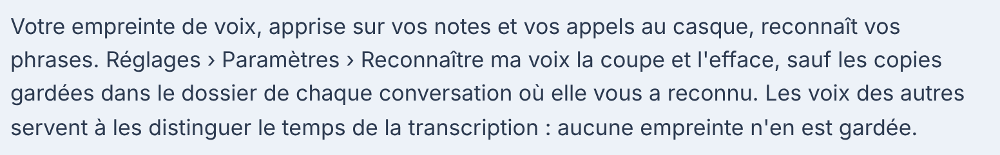
Sur le texte visible des cinq pages : 360 apostrophes droites pour 1 courbe ; 34 « : » après espace sécable pour 89 après insécable ; 7 « ; ? ! » après espace sécable, 21 après insécable, 0 après fine ; 6 « « » suivis d’une espace sécable, 27 d’une insécable ; 4 nombres séparés de leur unité par une espace sécable. Chaque lieu, avec sa ligne : typographie-fr-lieux.csv (434 lieux).
Cause dans le code
Textes saisis à la main, pages par pages ; aucune vérification avant de fusionner.
Impact
Tout lecteur français, partout : la page la plus touchée est Guides (117 apostrophes, 17 deux-points), puis Versions (116, 19).
Options
Choix
B ne tient pas dans le temps : la page Versions grandit à chaque version.
Règles et conventions
- Lexique des règles typographiques en usage à l’Imprimerie nationale : apostrophe typographique ; espace insécable avant « : » ; espace fine insécable avant « ; ! ? » ; insécables à l’intérieur des guillemets. Sur le web, apple.com/fr, le support d’Apple et Notion n’emploient que l’insécable ordinaire (U+00A0), avant « : » comme avant « ; ? ! » : c’est ce que retient la reco, et ce que le site fait déjà 21 fois.
- TEXTES.md : « guillemets français « » ».
- apple.com (1440 px) : 142 apostrophes courbes ’ contre 0 droites ; 2 espaces insécables U+00A0 avant : ? !, 0 fines U+202F, 0 espaces simples ; 1 guillemet(s) « » avec espace insécable U+00A0 à l'intérieur.
- support.apple.com (1440 px) : 22 apostrophes courbes ’ contre 0 droites ; 8 espaces insécables U+00A0 avant : ? !, 0 fines U+202F, 0 espaces simples ; 10 guillemet(s) « » avec espace insécable U+00A0 à l'intérieur.
- support.apple.com (1440 px) : 30 apostrophes courbes ’ contre 0 droites ; 5 espaces insécables U+00A0 avant : ? !, 0 fines U+202F, 0 espaces simples ; 1 guillemet(s) « » avec espace insécable U+00A0 à l'intérieur.
- notion.com (1440 px) : 15 apostrophes courbes ’ contre 0 droites ; 0 espaces insécables U+00A0 avant : ? !, 0 fines U+202F, 0 espaces simples ; aucun guillemet.
- notion.com (1440 px) : 58 apostrophes courbes ’ contre 0 droites ; 24 espaces insécables U+00A0 avant : ? !, 0 fines U+202F, 0 espaces simples ; aucun guillemet.
Spécification
| lieu | avant | après |
|---|---|---|
| scripts/typo.py (site, nouveau) | — | transformation du prototype (donnees/scripts/prototypes.py, typo()) : ' → ’ entre deux lettres ; « : » → : ; « ; ? ! » → ; « « » → « ; nombre + unité → insécable ; hors <script>, <style>, <code>, <kbd> et attributs |
| CLAUDE.md du site | « Avant de fusionner : python3 scripts/retours.py » | « … puis python3 scripts/typo.py --verifier » |
| TEXTES.md | Ponctuation : guillemets français | + apostrophe ’ et espaces insécables, vérifiées par scripts/typo.py |
Critères d’acceptation
typographie-fr.csvrefait : 0 apostrophe droite dans le texte visible, 0 « : ; ? ! » après une espace sécable, 0 guillemet sur espace sécable.- Les attributs
altet le code (<code>) inchangés.
P12 · Les chemins de menu se coupent n’importe où et se dessinent de deux façons
Symptôme
Les Guides écrivent les chemins de menu en gras (« Intégrations › Agents ») ; Confidentialité, Versions et l’installation en texte courant. En texte courant, ils se coupent au hasard : à 375 px, l’en-tête des Versions donne « vous- / même : Réglages › Paramètres / › Rechercher une mise à jour », la flèche en début de ligne.
Preuve
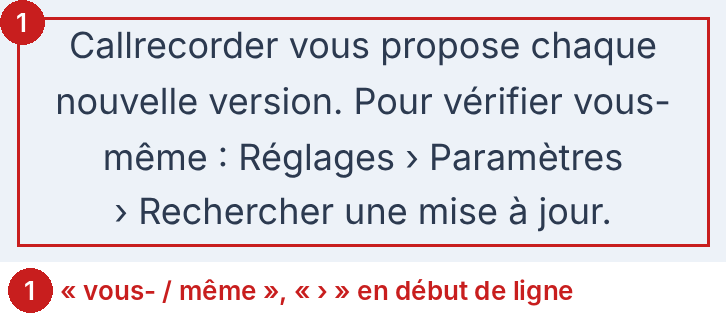
48 « › » précédés d’une espace sécable ; 23 chemins différents sur 4 pages ; 2 dessins (gras dans les Guides, texte ailleurs).
Cause dans le code
Pas de composant pour un chemin ; <b> dans guides/index.html, rien ailleurs.
Impact
Chaque personne qui cherche un réglage depuis le site : c’est la phrase qu’elle va recopier du regard dans l’app.
Options
Choix
L’aide d’Apple écrit les menus en gras : le lecteur reconnaît « un endroit où cliquer ».
Règles et conventions
- Guide d’utilisation du Mac : chemins de menu en gras, séparés par « > ».
- Apple HIG, Writing.
Spécification
| lieu | avant | après |
|---|---|---|
| style.css, nouveau | — | .chemin { font-weight: 600; color: var(--text); } .chemin > span { white-space: nowrap; } |
| guides, versions, confidentialite, index : 23 chemins | Réglages › Paramètres › Rechercher une mise à jour | <span class="chemin"><span>Réglages ›</span> <span>Paramètres ›</span> <span>Rechercher une mise à jour</span></span> |
Critères d’acceptation
- À 375, 768 et 1440 px, aucune ligne ne commence par « › ».
- Chaque chemin de menu des cinq pages a la classe
.chemin(liste dans donnees/scripts/prototypes.py, PATHS).
P13 · Données et confidentialité : douze paragraphes de même poids
Symptôme
Sous le titre, douze paragraphes de même corps, même gris, même marge, de 1 à 7 lignes, après 116 px de vide. Ce qui reste sur le Mac, ce qui part, chez qui, et comment le couper ont le même poids.
Preuve
12 paragraphes, 0 intertitre, 11 chemins de menu dans le texte. Le CSS prévoit .legal h2 (style.css:494), inutilisé.
Cause dans le code
confidentialite/index.html:44–58.
Impact
Toute personne qui vient avec une question précise (« est-ce que l’audio part ? ») : elle doit tout lire. C’est la page que lit un responsable conformité avant d’autoriser l’app.
Options
Choix
A garde le texte tel quel (travail juridique déjà fait) et ne fait qu’ajouter des repères.
Règles et conventions
- Apple HIG, Layout : grouper le contenu lié.
- TEXTES.md, Par élément : « Titre d’une page du site : l’information elle-même. »
- DESIGN.md, Principes : « on sépare par l’espacement, le regroupement et les fonds ».
- apple.com (1440 px) : Page vitrine, pas un texte juridique : 7 intertitres h2 très grands (72 px) et 17 h3, en blocs visuels par app ou fonction ; 1 tableau. capture
- apple.com (politique) (1440 px) : Politique en 12 intertitres h2 (32 px), dont le premier posé en question (« Que sont les données personnelles chez Apple ? »), sans tableau ni sommaire. capture
- raycast.com (1440 px) : Texte juridique de 3 866 mots en 12 sections numérotées (h2 24 px, « 1. Personal Data we collect »…) et 4 h3, avec 4 listes, sans tableau ni sommaire. capture
- linear.app (1440 px) : Texte juridique de 3 644 mots en 10 h2 (32 px), 2 h3 et 17 h4, très découpé en listes (40), avec un sommaire de page ; pas de tableau. capture
- notion.com (1440 px) : L'adresse renvoie vers la page de connexion de Notion : page non observable sans compte.


Ce qui a été tranché
Les quatre titres sont proposés ; ils restent à écrire par Gildas (TEXTES.md : un mot nouveau entre avec sa décision).
Spécification
| lieu | avant | après |
|---|---|---|
| confidentialite/index.html:45–58 | 12 <p> à la suite | <div class="masse"><h2>Ce qui reste sur votre Mac</h2> ¶1–2 · Ce qui en sort, si vous le décidez ¶3, 4, 7 · Ce qui en sort d’office, et comment le couper ¶5, 6, 8 · Ce site ¶9–11 ; ¶12 en note de fin |
| style.css:494 | .legal h2 { font-size: 24px; margin: 48px 0 12px; } | .legal .masse { background: var(--group); border-radius: 20px; box-shadow: 0 0 0 1px var(--border); padding: 28px 32px 12px; margin-bottom: 16px; } .legal .masse h2 { font-size: 22px; margin: 0 0 14px; } |
Critères d’acceptation
- Le texte des douze paragraphes est identique (diff du texte sans balises : vide, hors typographie de P11).
- Chaque masse a un titre ; aucune ne dépasse un écran de 900 px à 1440.
P14 · Filets entre les lignes des Guides et des Versions
Symptôme
Un filet #d9e2ee sépare chaque question des Guides et chaque version. Sur Versions, c’est un seul groupe blanc de 12 000 px, recoupé de 34 filets. Le libellé de groupe (« Démarrer ») est à 14 px du bord, le texte des lignes à 20.
Preuve
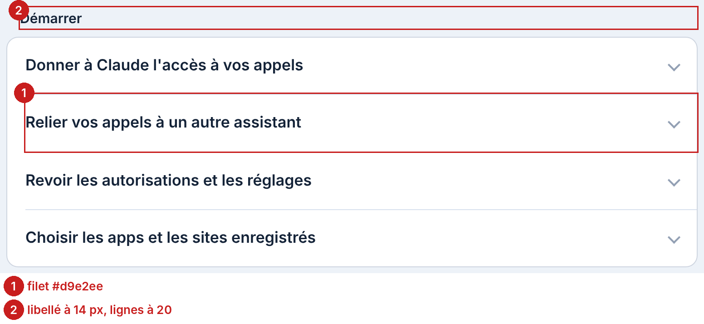
.row + .row : 19 filets dans les Guides, 34 dans les Versions. Décalage libellé / lignes : 6 px.
Cause dans le code
style.css:208 (dfc6ecb), rangé dans les « écarts connus » de DESIGN.md. :202 : margin: 0 0 10px 14px.
Impact
Visiteurs des Guides et des Versions. C’est l’écart connu qui reste au principe « pas de filets ».
Options
Choix
Va contre la convention observée : les cinq FAQ de référence (Raycast, Notion, Apple One, Obsidian, Tailscale) séparent leurs questions par un filet de 1 px, sans écart. A est retenu parce que le principe « pas de filets » est tranché par Gildas et que DESIGN.md demande de fermer cet écart ; les masses séparées gardent la lecture d’une liste. Si la familiarité doit primer, B est la convention.
Règles et conventions
- DESIGN.md, Principes : « Pas de filets. » et Écarts connus : « Des filets sur le site : .row + .row ».
- raycast.com (1440 px) : Questions séparées par un filet 1 px sous chaque item (rendu ≈ blanc 10 % sur fond noir), sans espace ni carte entre items ; items de 103 px. capture
- notion.com (1440 px) : Éléments <details> séparés par un filet 1 px noir 10 % en bas, sans espace entre eux ; items de 57 px. capture
- apple.com (1440 px) : Questions en liste, séparées par un filet 1 px blanc 20 % sous chaque item, sans carte ni espace ; icône ⊕ à droite. capture
- obsidian.md (1440 px) : Questions séparées par un filet 1 px gris #262626 en bas, sans espace ni carte ; items de 77 px. capture
- tailscale.com (1440 px) : Éléments <details> séparés par un filet 1 px #EEEBEA en haut (et en bas du dernier), sans espace ; items de 49 px. capture
- culturedcode.com/things (1440 px) : Aucune liste de questions dépliables trouvée sur la page d'assistance de Things.


Ce qui a été tranché
Le filet de la barre de la fenêtre de Claude reste : c’est une imitation de Claude, exception écrite dans DESIGN.md.
Spécification
| lieu | avant | après |
|---|---|---|
| style.css:208 | .row + .row { border-top: 1px solid var(--separator); margin-left: 20px; padding-left: 0; } | .row + .row { border-top: 0; margin-left: 0; padding-left: 20px; } details.row + details.row { padding-left: 0; } |
| style.css, nouveau | — | .group:has(> details.row), .versions-page .group { background: none; box-shadow: none; display: grid; gap: 6px; } .group > details.row, .versions-page .group > .row { background: var(--group); border-radius: 12px; box-shadow: 0 0 0 1px var(--border); } .versions-page .group { gap: 12px; } |
| style.css:202 | margin: 0 0 10px 14px | margin: 0 0 10px 20px |
| style.css:397, 405 | details.row + details.row … padding-left: 0 | padding-left: 20px |
| DESIGN.md, Écarts connus | « Des filets sur le site : .row + .row et .claude .bar » | « … : .claude .bar, qui imite la fenêtre de Claude » |
Critères d’acceptation
- Aucun
border-topvisible entre deux.row. - Le texte des libellés et des lignes commence à la même abscisse (écart 0 px).
P15 · La source d’une citation part en bout de ligne derrière un « · »
Symptôme
Dans la fenêtre de Claude, « … sur la dette nette. » · puis, à la ligne, « Banque Aurore, 28 oct. ». Selon la largeur, la source tombe seule, reste sur la ligne, ou se coupe en deux : trois citations, trois mises en page.
Preuve
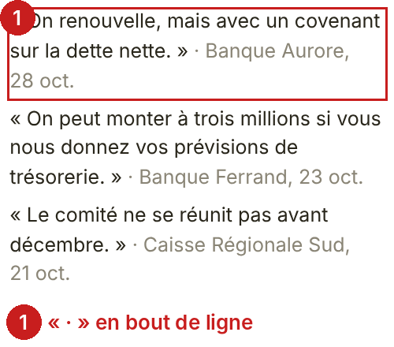
6 sources sur 6 précédées de « · » ; à 375 px, 2 sur 3 commencent une ligne seules, 1 se coupe.
Cause dans le code
index.html:68–70, 89–91 : <span class="sub">· …</span> en ligne (f079709).
Impact
Chaque visiteur de l’accueil, sur l’exemple qui porte la promesse du produit.
Options
Choix
La source est la preuve : elle mérite sa ligne.
Règles et conventions
- Apple HIG, Typography : hiérarchie par la taille et la couleur plutôt que par la ponctuation.
Ce qui a été tranché
Le « · » vient de f079709, sans raison écrite.
Spécification
| lieu | avant | après |
|---|---|---|
| index.html:68–70, 89–91 | <span class="sub">· Banque Aurore, 28 oct.</span> | <span class="sub">Banque Aurore, 28 oct.</span> |
| style.css, après :156 | — | .claude .quotes .sub { display: block; font-size: .9em; } |
Critères d’acceptation
- Chaque source commence sa propre ligne, à toutes les largeurs.
P16 · Le titre des Fonctionnalités flotte entre le sommaire et le texte
Symptôme
De 1000 à 1599 px, « Fonctionnalités » est centré sur la page (axe à 720 px à 1440) ; le texte qu’il coiffe commence à 432 px, après un sommaire de 188 px. Le titre ne s’aligne sur rien.
Preuve
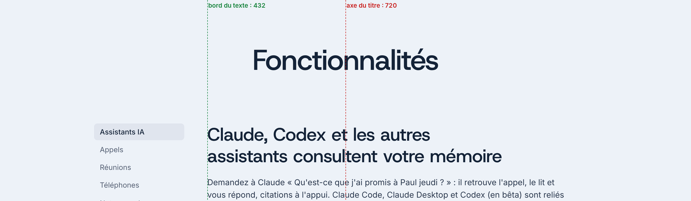
À 1440 px : centre du titre 720, bord du texte 432, bord du sommaire 196. Au-dessus de 1600 px, le sommaire sort dans la marge et tout se recentre : juste.
Cause dans le code
style.css:457 .page-head { text-align: center }, commun aux quatre pages intérieures (dfc6ecb).
Impact
Tout visiteur de Fonctionnalités sur un écran d’ordinateur courant (1280 à 1512 px).
Options
Choix
Seule la page à sommaire change ; les trois autres, sans sommaire, restent centrées.
Règles et conventions
- Apple HIG, Layout : aligner les éléments pour faciliter la lecture.
- support.apple.com (1440 px) : Pas de sommaire latéral permanent (la table des matières s'ouvre depuis un lien au-dessus du titre) ; h1 et texte alignés à gauche sur la même colonne de 817 px, elle-même centrée dans la page. capture
- linear.app/docs (1440 px) : Le h1 est aligné à gauche sur la colonne de texte (x=372), pas centré sur la page ; sommaire de navigation à gauche (0–280) et sommaire de la page à droite (1098–1348). capture
- manual.raycast.com (1440 px) : Le h1 est aligné à gauche sur la colonne de texte (x=335), à 75 px du sommaire latéral (0–260). capture


Spécification
| lieu | avant | après |
|---|---|---|
| fonctionnalites/index.html:40 | <header class="page-head"> | <header class="page-head avec-sommaire"> |
| style.css, nouveau | — | @media (min-width: 1000px) and (max-width: 1599px) { .page-head.avec-sommaire { text-align: left; padding-left: 236px; } } |
Critères d’acceptation
- À 1280 et 1440 px, le bord gauche du titre et celui du premier paragraphe sont à la même abscisse (±1 px).
P17 · Quatre largeurs sur l’accueil : les bords descendent en escalier
Symptôme
À 1440 px, les bords gauches : 196 (titre, scène), 290 (cartes), 326 (texte des cartes), 340 (installation, pied). Chaque bloc est centré, rien ne tombe sur la même verticale. Le titre, aligné à gauche, installe une verticale que le reste abandonne.
Preuve
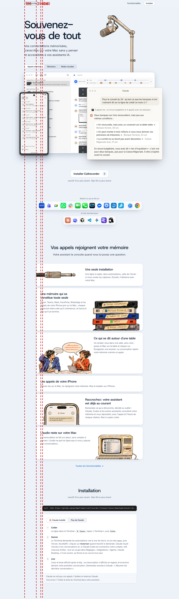
Largeurs : .stage 1048, .benefits 860, .col 760, .intro 700.
Cause dans le code
style.css:531 (.benefits { max-width: 860px }, e931e6c), :28, :195.
Impact
Tout visiteur de l’accueil sur ordinateur.
Options
Choix
760 est déjà la colonne de lecture du site (DESIGN.md) ; les cartes sont du texte à lire.
Règles et conventions
- Apple HIG, Layout ; NN/g, Visual hierarchy : l’alignement fait le groupement.
Ce qui a été tranché
860 px vient de e931e6c (« six bénéfices en cartes ») sans raison écrite.
Spécification
| lieu | avant | après |
|---|---|---|
| style.css:531 | .benefits { max-width: 860px; } | .benefits { max-width: 760px; } |
| style.css:536, 544, 547 | width: 54 % / 50 % / 46 % | @media (min-width: 641px) { 56 % / 52 % / 48 % } |
Critères d’acceptation
- À 1440 px, les bords gauches des cartes, de l’installation et du pied sont à la même abscisse (340).
P18 · 21 tailles de police déclarées, 42 styles de texte rendus
Symptôme
Le texte secondaire fait 14 px (légende du dock), 15 px (configuration requise, aide, pied) ou 16 px (cartes, étapes, Guides). Le texte d’une carte de l’accueil (16 px, gris) est plus petit et plus pâle que celui des Fonctionnalités (17 px, foncé) pour la même chose : expliquer une fonction. Sur téléphone, les cartes descendent à 14 px.
Preuve
21 valeurs de font-size pour 71 déclarations ; 17 tailles rendues à 1440 px ; 42 combinaisons de famille, taille, graisse, interligne et couleur. Après le prototype : 15 tailles et 38 styles (le reste est la fenêtre de Claude, une illustration à son échelle). Inventaire.
Cause dans le code
Chaque section a reçu sa taille au moment de son écriture ; pas de variable.
Impact
Diffus : la hiérarchie ne se lit plus à la taille. Chaque page.
Options
Choix
DESIGN.md pose « une seule valeur par rôle » pour l’app ; le site y gagne la même règle. Voir la table complète dans Système.
Règles et conventions
- Apple HIG, Typography : des styles en nombre limité, une hiérarchie claire.
- DESIGN.md : « Une seule valeur par rôle ».
Spécification
| lieu | avant | après |
|---|---|---|
| style.css, :root | — | --t-legende: 13px; --t-second: 15px; --t-texte: 17px; --t-chapo: clamp(19px, 2.2vw, 22px); --t-titre-carte: 24px; (sous 640 : 16 et 19) |
| style.css, 71 déclarations | voir Système, Migration des tailles | idem |
Critères d’acceptation
- Au plus 6 valeurs de
font-sizeen px dansstyle.csshors titres, cartouche et fenêtre de Claude. - Tout texte courant à 17 px (16 sous 640 px) sur les cinq pages.
P19 · 54 couleurs écrites en dur, 18 opacités de la même encre, 49 règles mortes
Symptôme
Neuf couleurs seulement sont des variables. Le contour d’un groupe, d’un bouton, d’une capture utilise l’encre rgba(20,40,80, x) avec 18 opacités différentes. 49 règles CSS ne s’appliquent à rien. Rien de visible pour un visiteur ; tout pour qui retouche.
Preuve
54 valeurs de couleur, 96 emplois ; 18 opacités (0,04 à 0,32) ; 26 rayons ; 39 ombres, 30 différentes ; 7 points de rupture ; 49 règles mortes (≈ 10 Kio, Lighthouse). Inventaire.
Cause dans le code
DESIGN.md le reconnaît : « Des couleurs en dur dans le CSS, hors variables ». Les règles mortes viennent des pages retirées (téléchargement, pile d’icônes).
Impact
Chaque retouche du site ; condition d’un éventuel thème sombre (P23).
Options
Choix
La table de migration est faite ligne par ligne ; le travail est mécanique.
Règles et conventions
- DESIGN.md : « Une seule valeur par rôle, jamais un chiffre recopié d’un fichier à l’autre. »
Spécification
| lieu | avant | après |
|---|---|---|
| style.css | voir Système et migration | idem ; et retirer les 49 règles de inventaire.html#mort |
Critères d’acceptation
- Hors
:rootet la fenêtre de Claude, aucune couleur littérale dansstyle.css. - 0 règle sans élément (
scripts/mort.js).
P20 · Les liens du pied font 23 px de haut, à 16 px du voisin
Symptôme
À 375 px, les quatre liens du pied passent sur deux lignes, à 8 px d’écart vertical : « Versions » fait 23 px de haut et sa voisine est à 16 px.
Preuve
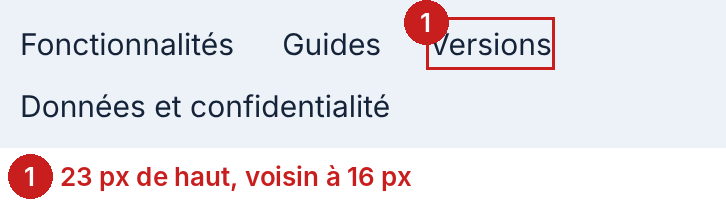
WCAG 2.5.8 : 1 cible du pied en échec à 375 px sur les 5 pages. Liens « gildas.fyi » et « LinkedIn » : 19 px de haut, assez espacés (59 à 75 px).
Cause dans le code
style.css:491 gap: 8px 24px ; liens en ligne sans retrait.
Impact
Au téléphone, chaque page.
Options
Choix
Correction minime.
Règles et conventions
- WCAG 2.2, 2.5.8 Target Size (Minimum) ; Apple HIG : 44 pt.
Spécification
| lieu | avant | après |
|---|---|---|
| style.css:491 | footer .links { gap: 8px 24px; } | footer .links { gap: 4px 20px; } footer .links a, .author .contact a { display: inline-block; padding: 3px 0; min-height: 24px; } |
Critères d’acceptation
- 0 cible du pied sous 24 px sans espace, à 375 px (mesuré : 1 → 0 sur le pied).
P21 · Le trait d’union du titre se lit comme un tiret
Symptôme
Le trait d’union de Host Grotesk fait 0,49 em, presque un demi-cadratin. À 84 px, « Souvenez- / vous de tout » se lit « Souvenez – vous ». L’aperçu de partage, sur une ligne, a la même allure.
Preuve
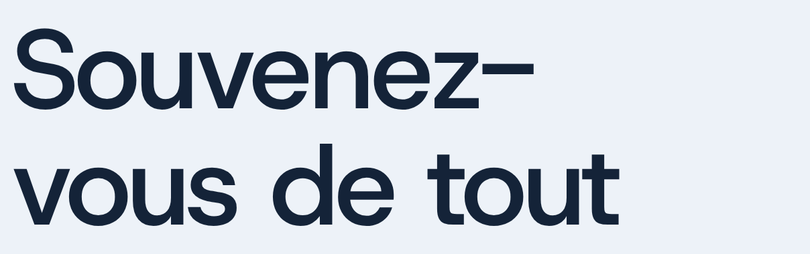
Largeur du trait d’union : 0,49 em en Host Grotesk 500, contre 0,33 em dans une grotesque usuelle (Arial) ; le tiret demi-cadratin de Host Grotesk fait 0,69 em.
Cause dans le code
Dessin de la police ; index.html:40.
Impact
Le premier mot que lit chaque visiteur, et l’aperçu de chaque partage.
Options
Choix
A ne touche ni au titre, ni à sa coupure, choisis exprès.
Règles et conventions
- Lexique de l’Imprimerie nationale : le trait d’union lie, le tiret sépare ; ils ne se confondent pas.
Ce qui a été tranché
Titre choisi par Gildas (1e46486) et coupure calculée pour le micro (style.css:60–67) : ni l’un ni l’autre ne change.
Spécification
| lieu | avant | après |
|---|---|---|
| index.html:40 | <h1>Souvenez-vous de tout</h1> | <h1>Souvenez<span class="union">-</span>vous de tout</h1> |
| style.css, nouveau | — | .union { display: inline-block; transform: scaleX(.62); margin: 0 -.09em; } |
| img/partage/accueil.jpg | Souvenez–vous | même retouche à la prochaine génération |
Critères d’acceptation
- Le texte du titre reste « Souvenez-vous de tout » (lecteur d’écran, copier-coller).
- La coupure à 1440 px reste après le trait d’union.
P22 · Aperçus de partage : la page Versions annonce la 0.16, et aucun n’a de texte alternatif
Symptôme
L’aperçu de la page Versions montre des cassettes étiquetées v0.16 à v0.12 ; la dernière est la 0.24.0. Aucune page ne déclare og:image:alt.
Preuve
5 aperçus, 1200 × 630, JPEG ; 0 og:image:alt ; 0 theme-color.
Cause dans le code
img/partage/versions.jpg dessiné avec des numéros ; balises absentes des cinq <head>.
Impact
Chaque partage de la page Versions (Slack, iMessage, LinkedIn) ; les lecteurs d’écran sur ces aperçus.
Options
Choix
TEXTES.md, principe 4 : un texte faux abîme la confiance ; une image qui ne porte pas de numéro ne peut pas mentir.
Règles et conventions
- Open Graph, og:image:alt.
- TEXTES.md, « Le texte engage ».
Spécification
| lieu | avant | après |
|---|---|---|
| img/partage/versions.jpg | v0.16 … v0.12 | novembre, octobre, septembre |
| 5 × <head> | — | <meta property="og:image:alt" content="…"> repris du alt de l’illustration |
Critères d’acceptation
- Aucun numéro de version dans les aperçus.
- Chaque page a un
og:image:alt.
P23 · Le site ne suit pas le mode sombre du Mac
Symptôme
Avec macOS en sombre, le site reste clair : rendu identique au pixel près. Le soir, un visiteur reçoit 5 000 px de #edf2f8, et la fenêtre Conversations claire au milieu d’un écran sombre.
Preuve
<meta name="color-scheme" content="light only"> sur les cinq pages ; « Thème clair uniquement » en tête de style.css. Différence de pixels entre les rendus clair et sombre : 0.
Cause dans le code
Choix : 55a2120 (24 octobre) et dfc6ecb (31 octobre) ; DESIGN.md, Site : « en thème clair uniquement ».
Impact
Visiteurs sur un Mac en sombre ; ce n’est pas une gêne de lecture.
Options
Choix
Le choix est tranché, et la convention le soutient : 9 des 10 sites observés gardent un thème fixe (seul rustup.rs bascule). Le prototype montre B en option (?theme=sombre), pour que Gildas décide sur pièce.
Règles et conventions
- Apple HIG, Dark Mode : les apps suivent le réglage du système ; « Ne proposez pas un réglage propre à l’app ».
- brew.sh (1440 px) : Ne suit pas prefers-color-scheme : page identique dans les deux modes, toujours sombre (fond rgb(46, 42, 36)). capture
- rustup.rs (1440 px) : Suit prefers-color-scheme : fond rgb(255, 255, 255) en clair, rgb(24, 26, 27) en sombre. capture
- raycast.com (1440 px) : Ne suit pas prefers-color-scheme : page identique dans les deux modes, toujours sombre (fond rgb(7, 8, 10)). capture
- culturedcode.com/things (1440 px) : Ne suit pas prefers-color-scheme : page identique dans les deux modes, toujours clair (fond rgb(242, 245, 247)). capture
- apple.com (1440 px) : Ne suit pas prefers-color-scheme : page identique dans les deux modes, toujours sombre (fond rgb(0, 0, 0)). capture
- support.apple.com (1440 px) : Ne suit pas prefers-color-scheme : page identique dans les deux modes, toujours clair (fond rgb(255, 255, 255)). capture
- linear.app (1440 px) : Ne suit pas prefers-color-scheme : page identique dans les deux modes, toujours sombre (fond rgb(8, 9, 10)). capture
- notion.com (1440 px) : Ne suit pas prefers-color-scheme : page identique dans les deux modes, toujours clair (fond rgb(255, 255, 255)). capture
- obsidian.md (1440 px) : Ne suit pas prefers-color-scheme : page identique dans les deux modes, toujours sombre (fond rgb(15, 15, 15)). capture
- tailscale.com (1440 px) : Ne suit pas prefers-color-scheme : page identique dans les deux modes, toujours clair (fond rgb(249, 247, 246)). capture


Ce qui a été tranché
Va contre dfc6ecb et DESIGN.md : à trancher par Gildas, rien n’est recommandé sans lui.
Spécification
| lieu | avant | après |
|---|---|---|
| — | — | Rien, sauf décision contraire de Gildas ; le cas échéant : les variables :root[data-theme="sombre"] du prototype, déplacées sous @media (prefers-color-scheme: dark), et color-scheme: light dark. |
Critères d’acceptation
- (si B) Contraste WCAG ≥ 4,5:1 de chaque couple en sombre, mesuré par
scripts/extrait.jsencolorScheme: dark.
Sources des conventions
Observations faites le 8 novembre 2026 sur 13 sites (brew.sh, rustup.rs, tailscale.com, apple.com/fr, support.apple.com/fr-fr, raycast.com, linear.app, notion.com, culturedcode.com/things, obsidian.md…), avec Playwright : references.json (50 observations, mesures comprises) et images/references/.
Relevé du 8 novembre 2026 sur le site en ligne (gildasfremont/callrecorder, commit 953f6d3). Données brutes dans donnees/, scripts dans donnees/scripts/.